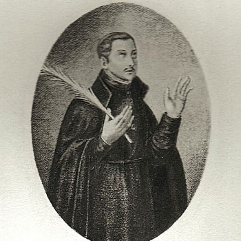

Mučenici iz Engleske i Walesa (10 svetaca)
Svećenik · Mučenik · Isusovac
Sv. Toma Garnet
1575. – 1608.
Svećenička služba engleskim katolicima vodila ga je kroz zatvore, bijeg i progonstvo. Položivši isusovačke zavjete, ponovno se vratio u domovinu, gdje je ostao vjeran svojem pozivu do smrti u Tyburnu.

Izvor slike
- Spomendani
- 23. lipnja · 25. listopada (Četrdeset mučenika Engleske i Walesa)
- Zaštitništvo
- Nije navedeno u izvoru
- Životni vijek
- 1575. – 1608.
- Nacionalnost / mjesto rođenja
- Engleska
- Puno ime
- Thomas Garnet, S.J.
- Datum rođenja
- 9. studenoga 1575.
- Mjesto rođenja
- Southwark, središnji London, Engleska
- Datum smrti
- 23. lipnja 1608.
- Mjesto smrti
- Tyburn, Middlesex, Engleska
- Dob u trenutku smrti
- 32 godine
- Štuje se u
- Rimokatolička Crkva
- Beatifikacija
- 15. prosinca 1929. — papa Pio XI.
- Kanonizacija
- 25. listopada 1970. — papa Pavao VI.
- Portret
- Kraljevski engleski kolegij u Valladolidu
Životopis
Toma Garnet (1575.–1608.) bio je zatvaran u tri navrata, ali ga to nije odvratilo od skrbi za engleske katolike. Jedno od njegovih uhićenja bilo je povezano s čovjekom u čijoj je kući boravio, a koji je bio upleten u Barutnu urotu, plan da se zgrada parlamenta digne u zrak. Garnet je potjecao iz Londona. Njegovi roditelji bili su vjerni katolici te su mu dopustili školovanje u tek otvorenom isusovačkom kolegiju u Saint-Omeru u Flandriji.
Želio je nastaviti studij u engleskom sjemeništu u Valladolidu u Španjolskoj, ali je oluja izbacila brod s njegova puta pa je umjesto u Španjolsku stigao u Englesku. Garnet i petorica njegovih suputnika bili su uhićeni, no svi su uspjeli pobjeći i naposljetku stići u Španjolsku. Godine 1599. završio je studij teologije, zaređen je za svećenika i potom se vratio u Englesku.
Mladi je svećenik šest godina neustrašivo djelovao među katolicima koji nisu htjeli prihvatiti kraljičino vrhovništvo u vjerskim pitanjima. Nadahnut primjerom svojega strica, oca Henryja Garneta, poglavara isusovaca u Engleskoj, odlučio je i sam stupiti u Družbu Isusovu. Primljen je u rujnu 1604., ali prije nego što je mogao nastaviti redovničku pripravu zahvatile su ga posljedice Barutne urote.
Iako je bio nedužan, uhićen je kada su državni službenici tražili Thomasa Rookwooda, u čijoj je kući stanovao. Rookwood je sudjelovao u uroti, ali Garnet o njoj nije mogao ništa reći jer u njoj nije sudjelovao. Njegovi su tamničari naposljetku zaključili da nema nikakvih podataka koje bi mogao otkriti te su ga vratili u zatvor. Ondje je ostao sedam mjeseci, sve dok skupina od 47 svećenika nije protjerana u Flandriju kako bi se oslobodio prostor za druge svećenike koje su vlasti smatrale opasnijima. Svima je bilo zaprijećeno da će izgubiti život ako se vrate.
Garnet je otišao u engleski novicijat u Leuvenu i ondje godinu dana poslije, 2. srpnja 1607., položio zavjete. U rujnu se vratio u Englesku, ali je za manje od šest tjedana ponovno uhićen nakon što ga je izdao svećenik koji je otpao od vjere. Vratili su ga u isti zatvor u kojemu je već bio zatočen, no pri ispitivanju nije htio davati nikakve informacije.
Dana 19. lipnja 1608. izveden je pred sud u Old Baileyju pod optužbom da djeluje kao svećenik po nalogu Rima. Jedini dokaz protiv njega bilo je svjedočenje čovjeka koji je tvrdio da je jednom vidio pismo na kojemu se Garnet potpisao i uz ime dodao riječ „svećenik”. Proglašen je krivim za veleizdaju i osuđen na smrt vješanjem.
Četiri dana poslije odvukli su ga u Tyburn na pogubljenje. U uobičajenom posljednjem obraćanju rekao je da doista jest svećenik i isusovac te da radosno umire za svojega Gospodina. U trenutku smrti imao je 33 godine.
Izvorni životopis prikupio i uredio Tom Rochford, SJ.
Izvori
- Thomas Garnet
- Dostavljeni životopisni podaci i spomendani